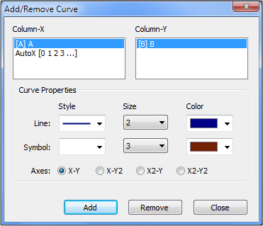

|
||||||
When you create a SigmaGraph document, a blank graph is automatically associated with the datasheet. When the datasheet is active, you can show or hide the graph by clicking the ‘View Graph’ toolbar button or select ‘View/Graph’ menu. To add curve to the graph, select the column to be plotted and click the ‘Add Curve’ toolbar button (or right click the column and select ‘Add/Remove Curve’, or select the ‘Graph/Add Curve’ menu). With the ‘Add/Remove Curve’ dialog you can select the X and Y columns, and set the curve style (line/symbol), size and color. You can also remove or modify the existing curves by selecting the plotted column and press the ‘Modify’ or ‘Remove’ button. You can choose the curve axes by clicking the X-Y, X-Y2, X2-Y or X2-Y2 button.  You can modify the graph options, including curve style, axis, scale… To show the ‘Graph Options’ dialog, click the toolbar button or select ‘Graph/Options’ menu. To change the selected curve legend font, click the ‘Font’ button. You can modify also the line, symbol st yle, size and color of each curve. You can add X and Y drop lines and change their style, size and color. To activate the selected curve, click the ‘Set as active’ button (the active curve is used for the fitting for example). To hide or show curve, press ‘Hide/Show’. To remove the curve from graph, press ‘Remove’. You can apply the current curve style to all curves by clicking the ‘Apply to All Curves’ button. To set the current style as the default one, click the ‘Set as default’ button. To change axis properties, select the axis (bottom (X), left (Y), top (X2) or right (Y2)). To show or hide the axis, check or uncheck the ‘Show Axis’ button. You can modify the axis title, show or hide this title, choose its font and color. The axis style (color, thickness, and label) can be be changed easily. The grid and tick options can also be modified by selecting color, grid count, … You can apply the current axis style to all axes by clicking the ‘Apply to All Axes’ button. To set the current style as the default one, click the ‘Set as default’ button. In the ‘Link’ input, you can optionally enter the axis link formula (example: 1/(2*pi*x) for Bottom axis, or 20*log(y) for the Left axis), and the corresponding value will be displayed in the status bar when the mouse moves over the graph. The X and Y scale can be manually entered, or automatically calculated. For each axis (bottom (X), left (Y), top (X2) or right (Y2)), select the range manually (‘From’ and ‘To’ values) or click the ‘AutoScale’ button. You can use the logarithmic or Linear scale (‘Log’ and ‘Linear’ buttons). The numerical format of the axis label can be selected (decimal or scientific), and the format prefix (‘Pre’ = number of digits before the decimal point) and suffix (‘Suf’ = number of digits after the decimal point) can be entered. To set the current style as the default one, click the ‘Set as default’ button. You can add horizontal (y = constant) or vertical (x = constant) lines to the graph. To do so, select style, size, color, position (the x-position for vertical line, and y-position for horizontal line), line limits (min. and max.) and click ‘Add’. You can change the line properties and click ‘Apply’, or remove the line by clicking the ‘Remove’ button. The general options include the graph title text, font, color and the maximum points displayed in the graph. To show or hide the graph title, check or unchek the ‘Show Title’ button. To change the graph or window background color, click inside the rectangle (in the center for the graph, and close to the border for the window) and select the color. To set the current style as the default one, click the ‘Set as default’ button. With SigmaGraph you can apply one graph format (colors, fonts, axis and curves style, …) to another graph. Simply right click the graph title bar and select ‘Copy Format’. Then select the graph to modify, right click its title bar and select ‘Paste Format’. The copied format will be applied to the selected graph. With the SigmaGraph Templates Manager (‘Graph/Templates’ menu), you can customize and save all of the properties of your graph and reuse them very quickly. With this useful feature, you will save time by using a predetermined style (i.e. template) to create a new graph. With the Template Manager, you can add, remove or edit up to sixteen templates, covering your needs. When clicking the ‘Apply’ button, the selected template will be applied to the active graph. To add text to the graph, click the ‘Add Text’ toolbar button and then click somewhere in the graph window and enter the text. To modify an existing text, double click it. You can change the text font, color…
To move a text, simply select it and move it with the mouse. You can create superscript or subscript text by using ^ or _ character. Example: x^2 will be displayed as x2 and x_2 will be displayed as x2. You can use parenthesis if you need more complex expression. Example: T^(3/2) will be displayed as T3/2. 6. Adding Line, Rectangle or Ellipse To add line, rectangle or ellipse to the graph, click the ‘Add Line’, ‘Add Rectangle’ or ‘Add Ellipse’ toolbar button and then click somewhere in the graph window, hold down the mouse button and draw the line, rectangle or ellipse. To modify an existing item, double click it. You can change the size, style, color, fill, arrow… To move item, simply select it and move it with the mouse.
|
||||||
|